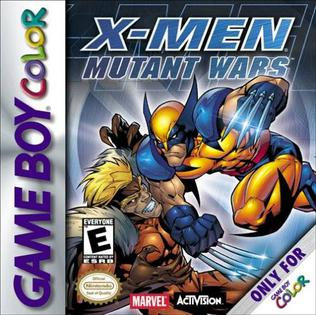
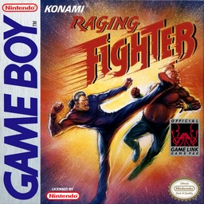
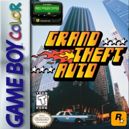
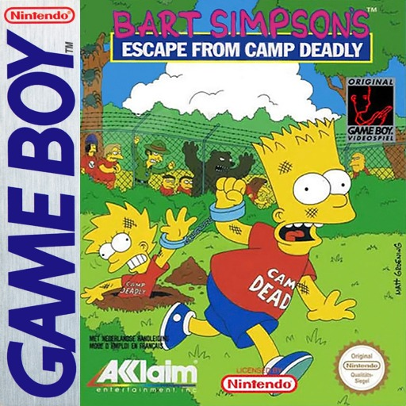
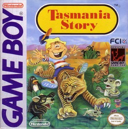
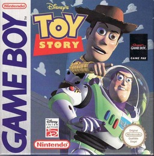
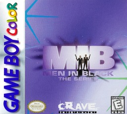
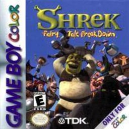
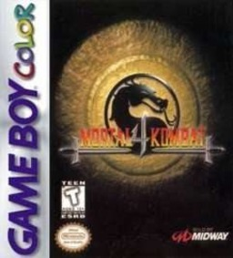
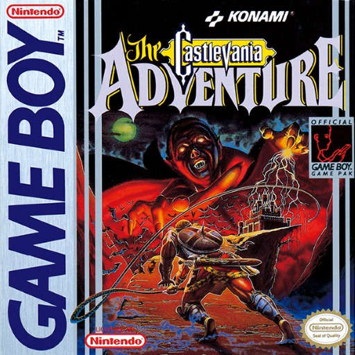

En Game Boy casi no hay listas de peores. Usamos Den of Geek (sus 15 peores), CBR, Time Extension y las notas de la prensa de la epoca, sumamos la leyenda de cada cartucho y dejamos afuera lo que ya esta en nuestro Top Mundial. Solo juegos con licencia Nintendo y venta normal.
03
#10
EN 1 LISTA

Game Boy
TARROVISIONCH 10
NO SIGNAL
Inserta gameplay aqui
X-MEN: MUTANT WARS
GAME BOY COLOR · 2000 · ACTIVISION (DEV. HAL/AVIT) · DEN OF GEEK (#15) · GAMERANKINGS 49,5%
▶ PREMIO AL EQUIPO QUE SE TURNA PARA SUFRIRCinco mutantes y puedes cambiar de personaje cuando quieras, mientras el que sale descansa para recuperar poder. Es el unico juego donde el equipo se turna para aburrirse. EGM le puso 3,5 de 10. Eso si: la banda sonora gusto.
04
#9
EN 1 LISTA

Game Boy
TARROVISIONCH 09
NO SIGNAL
Inserta gameplay aqui
RAGING FIGHTER
GAME BOY · 1993 · KONAMI · DEN OF GEEK (#13) · ALLGAME 2/5
▶ PREMIO A LOS SIETE LUCHADORES IDENTICOSUn juego de pelea con solo dos botones, donde la direccion cambia el golpe, y siete luchadores que, segun Den of Geek, cuesta distinguir. En Japon se llama Outburst. AllGame le puso 2 estrellas de 5.
05
#8
EN 1 LISTA

Game Boy
TARROVISIONCH 08
NO SIGNAL
Inserta gameplay aqui
GRAND THEFT AUTO
GAME BOY COLOR · 1999 · ROCKSTAR (DEV. TARANTULA) · DEN OF GEEK (#10) · GAMERANKINGS 57%
▶ PREMIO AL ROBO DE AUTOS APTO PARA TODA LA FAMILIASi, existio en la Game Boy Color: ciudades enteras copiadas casilla por casilla del original de computador, pero con groserias y sangre recortadas, y los trenes cambiados por teletransportes. Den of Geek dice que robar autos se vuelve incomodo. IGN le puso 4 de 10.
06
#7
EN 1 LISTA

Game Boy
TARROVISIONCH 07
NO SIGNAL
Inserta gameplay aqui
BART SIMPSON'S ESCAPE FROM CAMP DEADLY
GAME BOY · 1991 · ACCLAIM (DEV. IMAGINEERING) · DEN OF GEEK (#9) · UGO
▶ PREMIO AL CAMPAMENTO QUE SE ADELANTO A LA TELEFue el primer juego de Los Simpson en una consola portatil, y la trama del campamento llego un ano antes que el capitulo de la tele. Den of Geek dice que los enemigos aparecen sin parar y que ganar depende de la suerte. Una critica lo llamo un tren descarrilado.
07
#6
EN 1 LISTA

Game Boy
TARROVISIONCH 06
NO SIGNAL
Inserta gameplay aqui
TASMANIA STORY
GAME BOY · 1991 · FCI (DEV. PONY CANYON) · DEN OF GEEK (#8)
▶ PREMIO AL JUEGO QUE ERA OTRO JUEGO CON OTRO NOMBREEs un port de un juego japones de MSX sobre juntar frutas, parecido a Mappy, al que le pusieron la historia de un papa que busca un tigre de Tasmania. Den of Geek dice que los controles son mucho peores que los del original y que es excesivamente dificil.
08
#5
EN 1 LISTA

Game Boy
TARROVISIONCH 05
NO SIGNAL
Inserta gameplay aqui
TOY STORY
GAME BOY · 1996 · TIERTEX DESIGN STUDIOS · DEN OF GEEK (#7)
▶ PREMIO A LA PLATAFORMA QUE NO SE VEEn la Game Boy, los graficos pre-renderizados de la pelicula se ven tan mal en monocromo, segun Den of Geek, que no se distinguen las plataformas. Son 10 niveles y la carrera de autos de Genesis ni llego. GamePro: lento y repetitivo.
09
#4
EN 1 LISTA

Game Boy
TARROVISIONCH 04
NO SIGNAL
Inserta gameplay aqui
MEN IN BLACK: THE SERIES
GAME BOY COLOR · 1998 · CRAVE (DEV. TIERTEX) · DEN OF GEEK (#4) · GAMERANKINGS 27%
▶ PREMIO AL JUEGO QUE NECESITA UN NEURALIZADOREl Agente J recorre seis niveles de Manhattan peleando con doce tipos de alienigenas que, segun Den of Geek, casi no se diferencian. GameRankings le da 27%. Falta un neuralizador para olvidar que lo jugaste. Eso si: los videos entre niveles impresionaron.
10
#3
EN 1 LISTA

Game Boy
TARROVISIONCH 03
NO SIGNAL
Inserta gameplay aqui
SHREK: FAIRY TALE FREAKDOWN
GAME BOY COLOR · 2001 · TDK MEDIACTIVE (DEV. PROLIFIC) · DEN OF GEEK (#3) · GAMERANKINGS 36%
▶ PREMIO AL OGRO SIN SEGUNDO JUGADORUn juego de pelea de 9 personajes y 9 etapas, sin modo para dos jugadores: Shrek pelea solo. Game Informer lo llamo miseria portatil y le puso 0,5 de 10. GameRankings, 36%. Los ogros son como las cebollas, tienen capas. Este juego, no.
11
#2
EN 1 LISTA

Game Boy
TARROVISIONCH 02
NO SIGNAL
Inserta gameplay aqui
MORTAL KOMBAT 4
GAME BOY COLOR · 1998 · MIDWAY (DEV. DIGITAL ECLIPSE) · DEN OF GEEK (#2) · GAMESPOT 3,5/10 + IGN 4/10
▶ PREMIO AL MORTAL KOMBAT VEGETARIANORecortaron el plantel casi a la mitad, sacaron los combos y las armas, y la sangre solo aparece en los videos de los Fatalities. Den of Geek dice que parece hecho en Paint y que la musica son 4 notas en repeticion. GameSpot le puso 3,5 de 10.
12
#1
EN 3 LISTAS

Game Boy
TARROVISIONCH 01
NO SIGNAL
Inserta gameplay aqui
CASTLEVANIA: THE ADVENTURE
GAME BOY · 1989 · KONAMI · DEN OF GEEK (#11) + CBR + TIME EXTENSION
▶ PREMIO AL LATIGAZO EN CAMARA LENTAChristopher Belmont, sin armas secundarias, con un latigo que se debilita cuando te pegan y controles extremadamente lentos. Time Extension lo puso penultimo entre todos los Castlevania. Pero en 1989 la critica le puso ochos y vendio casi 9 millones de dolares.
13
ANALISIS DEL TOP
LICENCIAS EN BLANCO Y NEGRO Y UN CLASICO QUE SE ENFRIO
Cinco de los diez son licencias de series, peliculas o comics (X-Men, Bart Simpson, Toy Story, Men in Black y Shrek), la Game Boy Color se llena de ports recortados (Mortal Kombat 4 y Grand Theft Auto) y el #1 fue un exito en 1989. Tiertex hizo dos seguidos (Toy Story y Men in Black) y Konami abre y cierra el top.
14
GAME OVER
INSERTA MONEDA PARA CONTINUAR
Coco cierra tocando el tema de Game Over en bateria. ¿Cual fue el peor cartucho de Game Boy que les toco jugar? Cuentanos en los comentarios y cual consola quieren que siga.